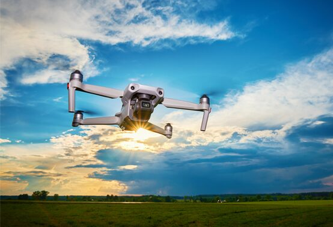
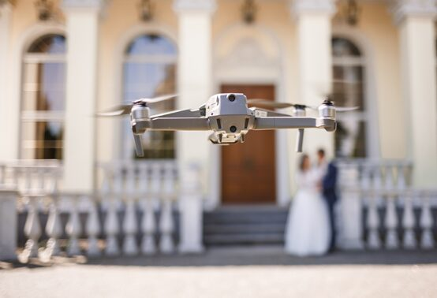

Mehr Überblick. Mehr Wirkung. Mehr Perspektive.
Manche Inhalte lassen sich vom Boden aus nicht erzählen.
Luftaufnahmen schaffen Überblick, setzen Orte, Dimensionen und Zusammenhänge in Szene und geben Produktionen visuelle Tiefe.
x@motion realisiert professionelle Drohnenvideos und Luftbilder – geplant, rechtssicher und abgestimmt auf den jeweiligen Einsatzzweck.

Was sind Luftaufnahmen von x@motion?
Luftaufnahmen sind bei uns kein Selbstzweck, sondern ein gezielt eingesetztes Gestaltungsmittel.
Sie ergänzen bestehende Produktionen oder stehen als eigenständiger visueller Baustein.
Ob kurze Establishing-Shots, dokumentarische Übersichten oder atmosphärische Bildfolgen – wir produzieren verwertbares Material, nicht nur schöne Bilder.

Mehrwert für Ihre Produktionsidee
Wirkung
Luftaufnahmen geben Filmen mehr Tiefe, Größe und Präsenz – oft sind es genau diese Bilder, die nachhaltig im Kopf bleiben.
Atmosphäre
Ein anderer Blickwinkel verändert die Wahrnehmung eines Ortes und schafft eine eigene, stimmige Bildatmosphäre.
Überblick
Flächen, Gebäude oder Veranstaltungsareale lassen sich aus der Luft klar erfassen und besser einordnen.
Perspektive
Drohnen ermöglichen Blickwinkel, die vom Boden aus nicht erreichbar sind, und erweitern die gestalterischen Möglichkeiten deutlich.
Anspruch
Luftaufnahmen unterstreichen Professionalität und Qualität – und zeigen sichtbar, wofür ein Projekt oder ein Unternehmen steht.
Dramaturgie
Gezielt eingesetzte Luftaufnahmen strukturieren Filme besser und helfen dabei, Szenen einzuleiten, zu verbinden oder abzuschließen.
Perspektiven, die Wirkung schaffen
Unsere Drohnenproduktionen richten sich insbesondere an:

Unternehmen
die Dimensionen, Standorte oder Prozesse zeigen wollen.
Vereine
die Projekte und Flächen übersichtlich darstellen müssenKommunen
& öffentliche Einrichtungen, die Orte sichtbar machen möchten
Veranstalter
die Reichweite und Dokumentation verbinden wollenWie läuft eine Drohnenproduktion ab?
Damit Luftaufnahmen am Ende wirklich funktionieren, folgen wir einem klaren Ablauf.
Planung & Vorbereitung
- Klärung von Luftraum, Auflagen und Genehmigungen
- Einschätzung von Wetter, Licht und Tageszeit
- Abstimmung der Motive auf Projektziel und Einsatzbereich
Drohnenflug & Aufnahme
- Aktuelle und einsatzbezogene Drohnentechnik
- Ruhige Kamerafahrten und saubere Perspektiven
- Videoaufnahmen und/oder hochauflösende Fotos
Postproduktion & Übergabe
- Farbkorrektur und Look-Anpassung
- Integration in bestehende Filme oder Lieferung als Einzelmaterial
- Übergabe in passenden Formaten für Web, Social Media oder RAW
Überall dort, wo Perspektiven den Unterschied machen und Inhalte mehr zeigen sollen als nur Bodenhöhe, sorgen professionelle Luftaufnahmen für echte Wirkung – sicher geplant, sauber umgesetzt und technisch auf dem Punkt.
Ihre passende Luftbildproduktion
Beratung und ein unverbindliches Angebot gibt es hier.
Jetzt Projekt startenDie wichtigsten Fragen
Besonders geeignet sind weitläufige Flächen, Gebäude, Veranstaltungsareale oder Standorte mit klarer Struktur. Gemeinsam entscheiden wir, welche Motive aus der Luft sinnvoll sind und wo klassische Bodenaufnahmen die bessere Wahl darstellen.
Nicht überall. Es gibt Sperr- und Beschränkungszonen, zum Beispiel in der Nähe von Wohngebieten, Verkehrswegen oder sensiblen Einrichtungen. Vor jeder Produktion prüfen wir, ob ein Drohnenflug am geplanten Ort zulässig ist und unter welchen Bedingungen.
Das hängt vom Standort und vom Motiv ab. In vielen Fällen sind Freigaben von Behörden, Kommunen oder Eigentümern erforderlich. Diese Punkte klären wir im Vorfeld, damit die Aufnahmen rechtssicher umgesetzt werden können.
Wetter spielt bei Luftaufnahmen eine zentrale Rolle. Starker Wind, Regen oder schlechte Sicht können einen Drohnenflug unmöglich machen. In solchen Fällen wird der Termin verschoben oder angepasst – Sicherheit und Bildqualität gehen vor.
Die Kosten hängen vom Aufwand ab – etwa von Ort, Dauer, Genehmigungen und gewünschter Nutzung. Luftaufnahmen können als eigenständige Leistung oder als Ergänzung zu bestehenden Produktionen gebucht werden. Nach einer kurzen Abstimmung erstellen wir ein transparentes Angebot.
Neue Blickwinkel für starke Bilder.
Wann betrachten wir Ihr Projekt von oben?